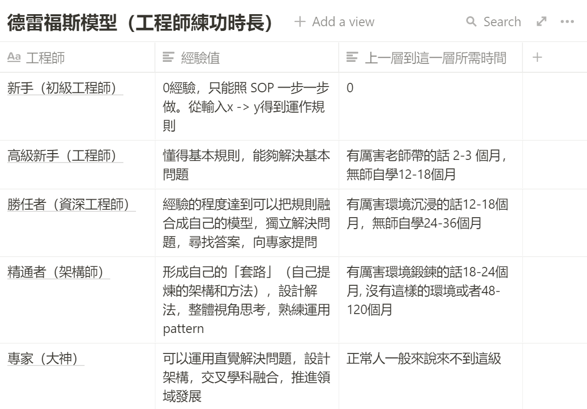

第十章 變成高手最快只需要一年的時間¶
當然，讀者看到這裡還是會有點擔心。我前面教的好像只是短期的速學法。非也，我只是透過一些數學手段計算
- 讓一些我們原本用感覺去量測的目標，變得清晰可見
- 設立目標就不容易訂歪。不然常常自己只是要解新手問題，結果在整個高手問題森林迷路了。
- 再來就是因為有具體方向了，也有題目的數量了。所以整個學習過程變成有進度條，辛苦也會漸漸能夠忍受了。因為你是能夠看得到終點的。
但回歸到一個現實問題，我們有時候不只是想短期的學技術。我們更多時候，是要進行長期領域的攻克。那麼針對這個方向，我們要如何進行攻克？
德雷福斯模型：專家、精通者、勝任者、高級新手、新手¶
關於長期領域的攻克進度，業界有一個具體的模型：德雷福斯模型（Dreyfus model of skill acquisition），這個模型將技能熟練度，由上而下分成：專家，精通者，勝任者，高級新手，新手五個等級。
在攻克一個領域的過程中，可以將能力值分為五個階段：
- 新手
- 高級新手
- 勝任者
- 精通者
- 大神
每個領域都有相對明確的 KPI。前面我在新手老師設計課程的盲區這一塊提過，並沒有將自己的能力 1 * / 10 的這種事。是因為能力分級只有五級。而每一層需要到達的水準、練習方向、準備方式完全不一樣。而每一層需要的知識更是指數型成長，所以不可能存在教 1/10 的大師所知道的知識就可以把你教會。
那麼，我們在每一階段，通常需要多少練功時長呢？
你可能會以為這是沒有辦法被進行估算的。
以工程師這一行來說的話，其實已經有相對貼近事實的時間統計了。

- 高級新手從 2-3 個月到12-18個月不等（有無厲害老師帶練）
- 勝任者從12-18個月到24-36個月不等（有無厲害環境沉浸）
- 精通者從18-24個月到48-120個月（有無環境發揮鍛鍊）
- 專家則靠機遇
其實這個模型列出的估算時間，不只是適用在工程師這一行。大多領域也是這個大概的時間範圍。
而所需要的時長，端看你想攻克到哪一些階段，以及中間有沒有找到厲害的老師幫你縮短時間。
而且，你可能更聽說過一件事，如果你已經到達一個領域的精通者或大神級別，通常你再攻克另外一個領域的時間，會指數型下降。精通更多領域，學一門新學問的所需時間會大幅減少。
所以你真的不需要一萬小時才能夠學會一門技能。通常我們所說的「會」，頂多就是高級新手、勝任者階段而已。按照這個標準，快的話兩三個月，慢的話頂多一年多。
你可能會覺得這個數字不可能這麼短吧。
事實上是可能的，因為公司的訓練教育就是如此阿，公司是要賺錢的，不是找一個人來當學生學生慢慢學的。
公司的工作訓練基本上就是前輩帶後輩，先教怎麼做（程序性知識），然後再慢慢補充細節（事實性以及概念知識），透過每天解決不同的業務問題以及發問，得到快速成長的結果。
如果一個公司還讓你從基礎知識學起的話，那這間公司也老早就倒了。
鬼速學習法 — 如何將無限的學習旅程壓縮到光速學會¶
再來，以我本人的經歷。甚至覺得上面這個表所寫的這個數字還太高了。這是一般人學習時，所需要的「自然」時間。
自然是指碰運氣看書、碰運氣找老師、碰運氣找到有系統訓練的公司、夠多機會可以歷練。也就是題目出現的機率是自然的，解題出現的機率是自然的，你只是等在那裡，被動的被系統 assign 學習的機器。
但如果我們主動呢？
讓我提出一個你從來沒想過的角度吧。
為什麼我們常會覺得學習是無限的？
這是因為往往我們在遇到一個新問題點時，為了解決這個問題，我們可能突然間又會遇到 3-5 個子問題。為了解決這當中的子問題，每一個子問題，我們又會再遇到 3-5 個孫問題。
接著。。。。。就沒有接著了，你會覺得這沒完沒了，就直接放棄了。
因為你不知道到底後面會有多少問題，自己還要花多少時間呢？
讓我問你一個問題，如果你認真挖下去，一直挖到最底層不會產生新的子問題，那麼所有的問題加起來要花多少時間。你可能從來沒有想過這件事吧？
而這個問題其實是有答案的。
我們人類之所有會對無窮無盡的問題放棄，是因為我我們人類的短時記憶區只能容納 3-5個子主題。這是我們對一個問題瞬時間所容忍的數學極限。所以當 1 個問題，膨脹到 9-25 個問題時，我們立刻就會崩潰。自然就會算了。。。。
但是若我們反過來想這件事呢？
前面我寫到，我們在學習時，可以反過來學習，抱怨自己遇到的問題。其實整理下來，可能就只有大約 9-25 個問題而已。然後其實這九個問題又可以被分類到 3-5 大類。
事實上，我認為幾乎世界上所有的問題、答案基本上都是 3 次方的，而他們是以這樣的結構存在
- 1,2,3
- 前，中，後
- 輸入，處理，輸出
- 是什麼，為什麼，如何做
又或者是各種領域自己的結構
- (學習) - 目標、過程、如何持續
- (做生意) - 招客、服務、成長
- (剖析財報) - 利潤率，總資產週轉率，槓桿倍數
好。假設遇到的問題。我們都可以用以上的步驟，從終點用「三部曲」拆解。然後拆到沒有顆粒為止。
那我們總共要解決多少個問題呢？我們可以先窮盡一下問題的數量，試著把3的次方都算出可能性。
- 3**4 = 81
- 3**5 = 243
- 3**6 = 729
- 3**7 = 2187
- 3**8 = 6151
假設我們解決一個問題要 1 天
那麼可能就需要：
- 90 天
- 8個月
- 2 年
- 5 年
- 16 年
事實上你會發現這幾乎就近似於成為（野生）高級新手，勝任者，精通者，專家需要的時間。
如果再讓你重新回來看到這個表，你會不會發現什麼微妙之處了呢？
但多數市面上只要達到勝任者、精通者，大家就會認為他是專家了。而且，更多時候，你只要達到高級新手，人家（完全不懂的人）就會認為你是專家了。
而解決問題需要一天的時間。這是抓比較寬鬆的。
假設我們如果解一個問題是 8 小時，也就是只需要原來 1/3 的時間。（假設我們用機器或框架求解）
那麼所需時長就會變成
- 30 天
- 90 天
- 8個月
- 2 年
- 5 年
而這個數字，貼近於（幸運有環境）的高級新手，勝任者，精通者，專家需要的時間。
當然我們也可以再短下去。假設一個問題只要再 1/3 也就是 2.6 小時
那就會變成是：
- 10 天
- 30 天
- 90 天
- 8個月
- 2 年
事實上我現在學習一個新領域的耗時程度，差不多也是如此。
- 到勝任者的時間只需 90 天
- 到精通者的時間 8 個月
- 到專家的程度 2 年內
當然，我寫這本書的目的不是要吹噓我自己學習速度有多誇張。而是要讓各位讀者同樣也擁有相同的能力。我只是利用數學模型去展示，這是完全有可能的一個理論。
光速學習能力的時間與成本¶
如何才能做到如此變態的學習速度呢？
剛剛我們談完了問題極限，列出了3的次方可能性：
- 3**4 = 81
- 3**5 = 243
- 3**6 = 729
- 3**7 = 2187
- 3**8 = 6151
但事實上我不認為一個領域可以要研究到 6151 個問題。大概 2187 個問題就差不多了。
所以要解的就是
- 81 高級新手
- 243 熟練者
- 729 精通者
- 2187 專家
假設高級新手有 81 個問題。一本書能解你 3 個問題。你其實需要 27 本書。
以此類推，所以你需要
- 27 本書
- 81 本書
- 243 本書
- 729 本書
事實上一個領域買到 729 本書也不太可能。243 是比較有可能的數字。因為同一個領域，許多書的內容都有一定程度的重複。我當時為了學習財報分析買了四百本書，後來大致翻完，我感覺讀起來像是 81 本不同書而已。
而剛剛我們說到：假設高級新手有 81 個問題。按照一本書能解你 3 個問題。你其實需要 27 本書。
（你不需要把整本書讀完，只要那本書能夠解你一個子問題或孫問題就夠了，實際點！）
一本書 300 塊。27 本書就是 8100 塊。解決一個問題成本100塊。
你看 27 本書。假設 1 本書需要看 1 天。那就是 27 天可以看完（+練完）變成高級新手。
30 天高級新手不是什麼不可能的事。那熟練者 90 天也是可以做到的事。
而且，看書還是比較慢的方法。通常我會去上課。有些領域理論上我自學 30 天應該也有辦法學到高級新手。但是去上高手開的課，可能 1 天花 8100 塊以內就學會。但是時間上我只需要花 1 天，而不是 30 天。
所以好課與爛課其實是能不能將原先 30 天練功時間縮到 1 天，節省 30 倍時間。而不是上完課之後，不僅成果為 0 ，甚至反而更打擊自己的自信心。
這樣算下來，你還會覺得學習、鍛鍊的目標還是看起很遠嗎？